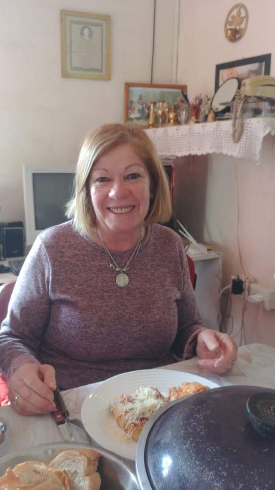
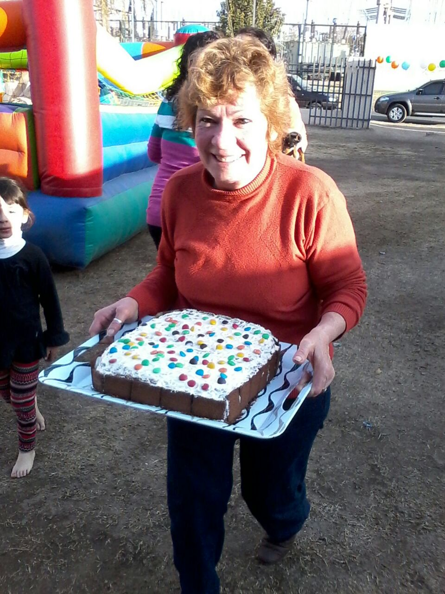
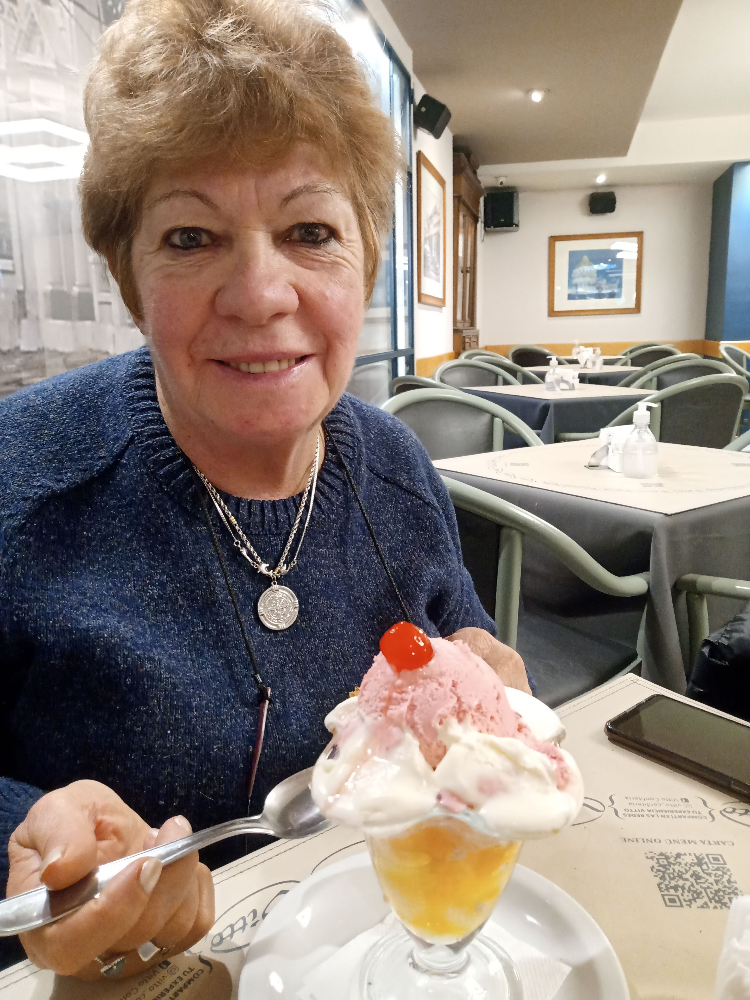
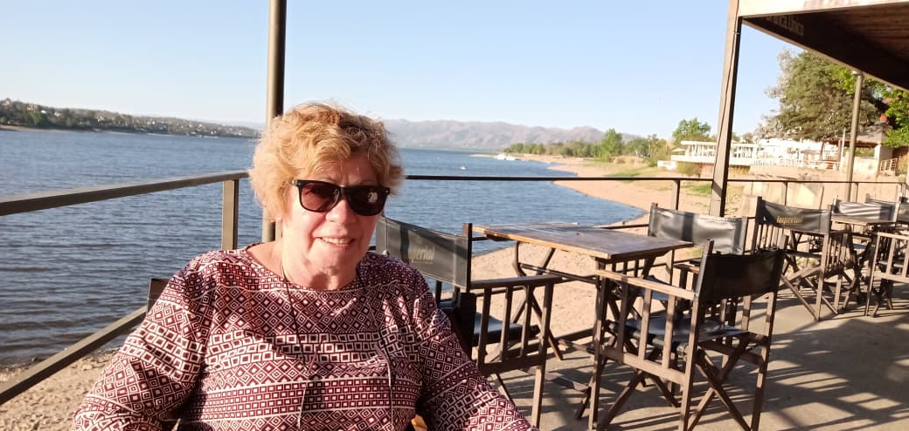
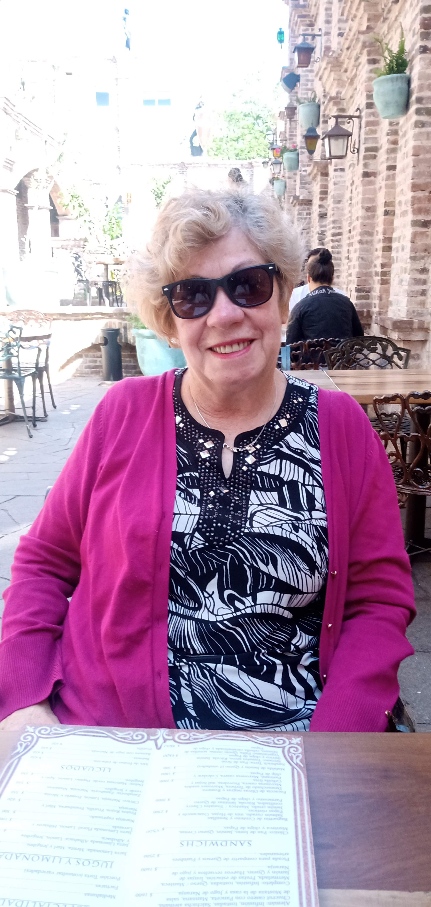
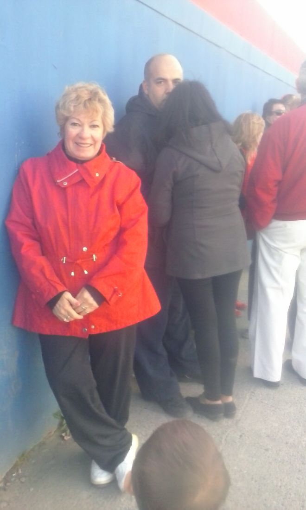
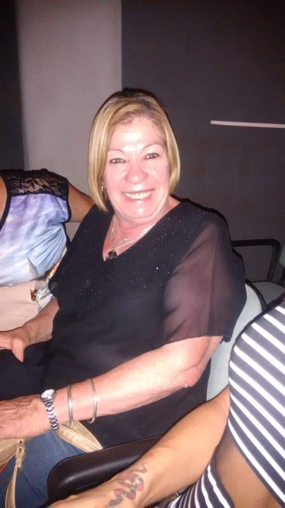
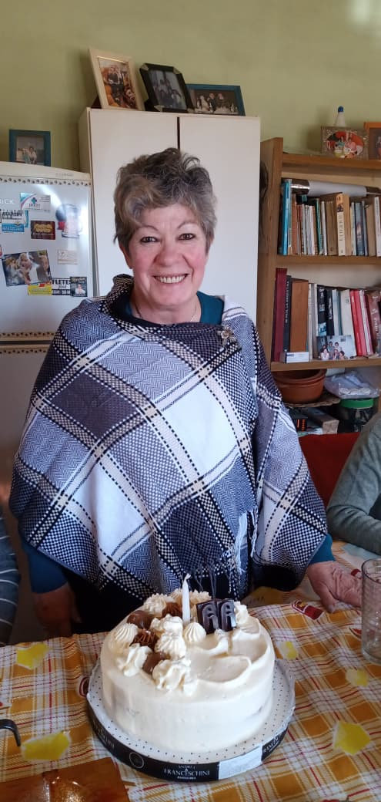

Hay personas que dejan recuerdos.
Otras dejan enseñanzas.
Chiquita deja ambas cosas.
CHIQUITA
70
70 años de vida, de fe y de infinitos motivos para agradecer.
Abrir invitaciónHay personas que dejan recuerdos.
Otras dejan enseñanzas.
Chiquita deja ambas cosas.
70 años de vida, de fe y de infinitos motivos para agradecer.
Abrir invitaciónExperta en reunir personas, hacer reír y preparar algo rico para acompañar la charla.
⌄







📅 18 de julio de 2026
🕗 20:00 hs
📍 Rancho "El Tata"
A. Cura Brochero 2852, San Antonio
🥂 Solo te pedimos que traigas algo para beber y muchas ganas de compartir.
⌄Por favor confirmá tu asistencia antes del 10 de julio.